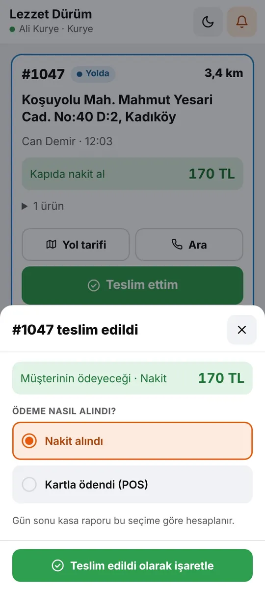

Telegram'dan sipariş
Müşteri uygulama indirmez, üye olmaz. İşletmenizin botunu açar, sipariş sayfası Telegram'ın içinde tam ekran açılır.
Restoran, kafe, market ya da usta: müşterileriniz uygulama indirmeden kendi botunuzdan sipariş verir. Siparişi anında ekranınızda görür, hazırlar, kuryenize verirsiniz. Sipariş başına kesinti yok.
Görüntülerdeki işletme, kişi ve tutarlar örnektir.
Menüden kuryeye, yazıcıdan rapora: işletmenizin bütün sipariş akışı tek yerde.
Müşteri uygulama indirmez, üye olmaz. İşletmenizin botunu açar, sipariş sayfası Telegram'ın içinde tam ekran açılır.
Siparişler sizin adınızı taşıyan botunuzdan gelir. Bağlantıyı Instagram'a, WhatsApp durumuna koyun; QR afişini kapıya asın.
Sipariş başına kesinti yok. Sabit aylık paket; müşteriniz ve kazancınız sizde kalır.
Porsiyon ve boy seçenekleri, çıkarılabilir malzemeler, ekstralar, menü (kombo) kurma, kategori ve fotoğraflar.
Şablonu indirin, ürünlerinizi ve fotoğraflarını yazın, bota geri gönderin: menünüz dakikalar içinde hazır.
Konumunuza göre km bazlı bölgeler, teslimat ücreti, en az sipariş ve ücretsiz teslimat sınırı. Bölge dışına sipariş gelmez.
Yeni sipariş sesli uyarıyla düşer. Onayla, hazırla, kuryeye ver, teslim et: müşteri her adımı Telegram'dan görür.
Kurye siparişleri kendi ekranından alır; kim ne tahsil etti (nakit, kart, diğer) gün sonu kasada hazır.
Bluetooth, USB, bilgisayar ya da internete bağlı bulut yazıcı. Bulut yazıcıda telefon kapalıyken bile fiş çıkar.
Türkçe, English, Русский, Deutsch, العربية, Español. Sayfa müşterinin telefon dilinde açılır; not ve adres Türkçeye çevrilir.
Müşteriler işletmeyi ve ürünleri yıldızlar. Adil gösterim: en az 10 değerlendirme, son 6 ay. Öne çıkanlara «YourPOS 360'ın önerisi».
«2. ürün %50», «menüde içecek hediye» gibi kampanyalar; indirim sepette kendiliğinden düşer.
Ciro, saatlik yoğunluk, en çok satanlar, ödeme yöntemleri, iptaller ve gizliliğe uygun müşteri istatistikleri. Tek dokunuşla Excel.
Personel ve kuryeleri davet edin; mutfak ya da kasa tabletini Telegram'sız bağlayın.
Tek bot, şube seçimi ve merkez ekranı. Bütün şubeleri tek yerden izleyin.
Tesisatçı, elektrikçi, usta: müşteri hizmeti seçer, gün ve saat belirler; durumlar «Usta yolda» olarak gider.
Müşteriler @yourpos360_bot'ta /yakin yazıp konumlarına en yakın işletmeleri bulur, tek dokunuşla sipariş verir.
Sözleşmeler elektronik onaylı, PDF kopyaları Telegram'a gelir. Müşteri verisi satılmaz, reklamda kullanılmaz.
Kurulumu Telegram'dan, telefonunuzdan yaparsınız. Takıldığınız her yerde «Bize yazın».
@yourpos360_bot'u açın, işletme bilgilerinizi ve paketinizi seçin, sözleşmeleri onaylayın.
Uygulamadan tek tek ya da Excel şablonuyla toplu; fotoğraflar, seçenekler ve menüler dahil.
BotFather'dan kendi botunuzu açın, anahtarı Panelim'e yapıştırın. Birkaç dakika sürer.
Bot linkinizi ve QR afişinizi paylaşın. Siparişler sesli uyarıyla ekranınıza düşer.
Restoran ekranı telefonda, tablette ya da bilgisayarda çalışır. Yeni, hazırlanıyor, hazır, yolda: her siparişin nerede olduğunu bir bakışta görürsünüz.

Müşteri «soğansız» der, ekstra kaşar ekler, menüsünde içeceğini seçer. Seçim tamamlanmadan ürün sepete girmez; mutfağa eksiksiz sipariş gelir.


Kurye hazır siparişleri «Al»ır ya da siz ona verirsiniz. Adres, telefon, kapıda alınacak tutar ve ödeme şekli kartında yazar. Teslim edince tahsilatı seçer.

İnternete bağlı Star (CloudPRNT) ya da Epson (Server Direct Print) fiş yazıcısı, onaylanan siparişleri doğrudan sunucudan alır. iPhone kullanan işletmeler için ideal.


Günlük ciro, saatlere göre yoğunluk, en çok satanlar, ödeme yöntemleri ve iptaller. Yeni: kaç müşteriniz tekrar sipariş verdi, müşteri başına ortalama ne harcandı.


Botu başlatır, «Sipariş ver»e dokunur. İlk siparişte konumunu ve telefonunu paylaşır; sonraki siparişlerde adresleri hatırlanır, «Aynısını sepete ekle» ile saniyeler sürer.


YourPOS 360 her hafta gelişiyor. Sıradaki büyük adımlar:
Garson masada siparişi telefonundan alır; sipariş anında mutfağa ve kasaya düşer. Masa hesabı ayrı ayrı ya da birlikte, tek dokunuşla kapanır.
Tabldot kasası, fast food usulü sıra numaralı fiş ve mutfaktan «Hazır» numaralarını gösteren numaratör ekranı.
Kurye hakedişi, gün sonu kasa kapanışı, gelir-gider, maaş ve avans takibi, mesai ve izinler.
İşletmelerden gelen her öneri listemizde. Son eklenenler:
İnternete bağlı Star ve Epson yazıcılar siparişi doğrudan sunucudan alıyor. Telefon kapalı olsa da fiş çıkıyor.
Kaç yeni müşteri geldi, kaçı tekrar sipariş verdi, müşteri başına ortalama ne harcandı. İsim ve telefonlar gizlilik için kısaltılıyor.
Adım adım ekran görüntülü rehberler yayında. Müşteriler botu ilk açtığında rehber kendiliğinden geliyor.
Ortalama en az 10 değerlendirmeyle ve son 6 ayın puanlarından gösteriliyor. Öne çıkan işletmelere «YourPOS 360'ın önerisi» rozeti.
Hazır paketler yetmiyorsa ihtiyacınızı yazın, size özel paket teklifi gelsin. Onaylarsanız paketiniz o olur.

Müşteriler @yourpos360_bot'ta /yakin yazıp konumuna en yakın işletmeleri buluyor; mesafe, tür ve «Şu an açık» filtresiyle.

Excel şablonuna ürünle birlikte fotoğrafı da yerleştirin; menünüz fotoğraflarıyla birlikte tek seferde yüklensin.
Tesisatçı, elektrikçi ve diğer ustalar için hizmet seçimi, gün-saat randevusu ve «Usta yolda» bildirimi.
Sözleşmeler güncellendi; işletmeler değişiklikleri Panelim'den okuyup tek dokunuşla onaylıyor.
Yeni özellikler düzenli olarak ekleniyor; güncellemeler kendiliğinden gelir, bir şey kurmanız gerekmez. Bir özellik mi istiyorsunuz? Panelim → «Bize yazın» ile iletin; öneriler doğrudan geliştirme listemize giriyor.
Hayır. Telegram yeterli; sipariş sayfası Telegram'ın içinde açılır. Üyelik ya da kart bilgisi istenmez.
Yok. YourPOS 360 sabit aylık paketle çalışır; sipariş başına kesinti alınmaz. Ödemeyi müşteri kapıda doğrudan size yapar.
Paketler ürün sayısı, haftalık sipariş ve ekip sınırına göre değişir. Güncel ücretler @yourpos360_bot'taki üyelik ekranında gösterilir; ücretsiz deneme ile başlayabilirsiniz.
Telegram'ın resmî bot açma hesabı @BotFather'a /newbot yazarsınız, ad verirsiniz; size bir anahtar verir. Anahtarı Panelim'deki kutuya yapıştırınca botunuz bağlanır. İşletme rehberinde ekran görüntüleriyle anlatıyoruz.
Evet, bulut yazıcı ile. İnternete bağlı Star (CloudPRNT) ya da Epson (Server Direct Print) yazıcı, onaylanan siparişleri doğrudan sunucudan alır; telefonunuzun açık olması gerekmez.
Müşteri bilgileri işletmenize aittir, başka işletmelerle paylaşılmaz. YourPOS 360 yalnızca destek, sahte sipariş önleme ve istatistik için kayıt altında erişebilir; satmaz, reklamda kullanmaz.
Evet. Market ve dükkânlar ürün satışı, tesisatçı ve ustalar randevulu hizmet için kullanır. Yakınımdaki işletmeler listesinde iş kolunuza göre bulunursunuz.
Zincir paketinde tek bot üzerinden şube seçimi yapılır; merkez ekranından bütün şubeleri izlersiniz.
Kurulum birkaç dakika sürer. Ücretsiz deneme süresiyle başlayın, siparişleriniz hemen gelmeye başlasın.
✈️Telegram'da arayın@yourpos360_bot